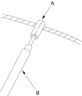
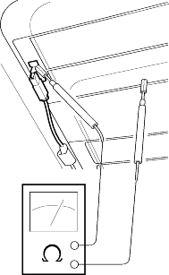
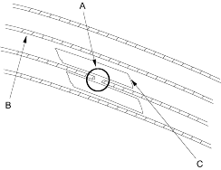
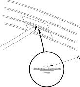

- Wrap Aluminium foil (A) around the tip of the tester probe (B) as shown.

- Touch one tester probe to the window antenna terminal (A) and move the other tester probe along the antenna wires to check that continuity exists.

- Lightly rub the area around the broken section (A) with fine steel wool, then clean it with alcohol.

- Carefully mask above and below the broken portion of the window antenna wire (B) with transparent tape (C).
- Using a small brush, apply a heavy coat of silver conductive paint (A) extending about 1/8" on both sides of the break. Allow 25 minutes to dry. Thoroughly mix the paint before use.

- Check for continuity in the repaired wire.
- Apply a second coat of paint in the same way. Let it dry 3 hours before removing the tape